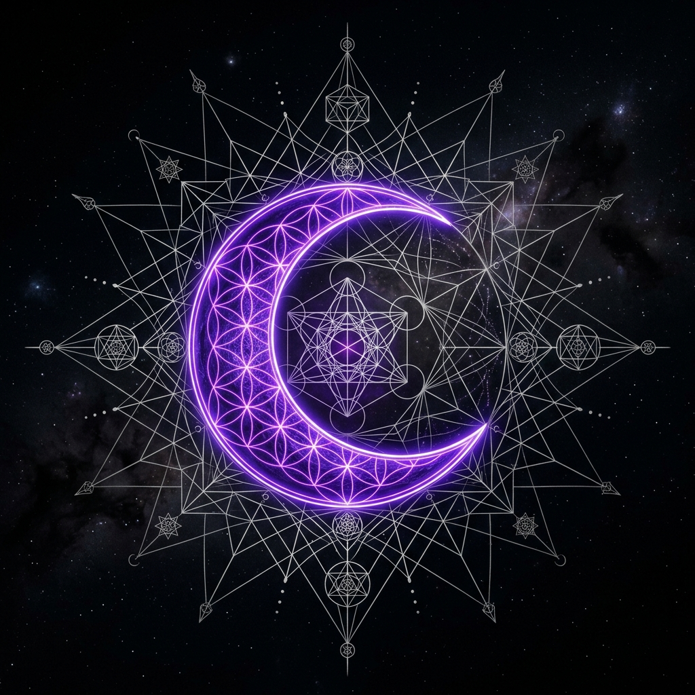

Mapas de Sentido
Tres Portales de Exploración
Cada portal es una entrada a un sistema de significados que la humanidad ha construido durante milenios.

El Círculo de Signos
12 arquetipos universales que mapean el viaje del alma. No predicen tu futuro: iluminan tu presente.
Explorar

El Lector Simbólico
Un oráculo digital que transforma tus palabras en reflexiones basadas en arquetipos universales.
Consultar

Mapas de Sentido
Glosario interactivo de símbolos esotéricos: la semiótica detrás de los rituales que nos conectan.
Descubrir